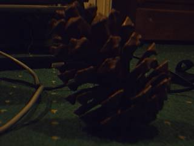
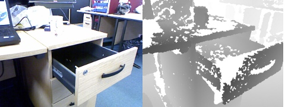

Capturing frames from a camera
Video for Linux Version 2 (V4L2)

HornetsEye allows you to capture images using a V4L2-capable device (for example a USB webcam or a frame grabber).
Basic example
The basic example program opens a camera and displays the frames.
require 'hornetseye_v4l2'
require 'hornetseye_xorg'
include Hornetseye
camera = V4L2Input.new
X11Display.show { camera.read }
Selecting a video mode
This is a more sophisticated example. It opens the first V4L2 camera and then it prompts the user to select one of the video modes offered by the camera. Finally the program displays the frames.
require 'hornetseye_v4l2'
require 'hornetseye_xorg'
include Hornetseye
camera = V4L2Input.new '/dev/video0' do |modes|
modes.each_with_index { |mode,i| puts "#{i + 1}: #{mode[0]} #{mode[1]}x#{mode[2]}" }
modes[STDIN.readline.to_i - 1]
end
X11Display.show { camera.read }
Firewire Digital Camera (DC1394)

HornetsEye also supports capture from DC1394-compatible firewire digital cameras.
Basic Example
require 'hornetseye_dc1394'
require 'hornetseye_xorg'
include Hornetseye
camera = DC1394Input.new
X11Display.show { camera.read }
Selecting a video mode
In this example the user is prompted to select a video mode offered by the camera.
require 'hornetseye_dc1394'
require 'hornetseye_xorg'
include Hornetseye
camera = DC1394Input.new 0 do |modes|
modes.each_with_index { |mode,i| puts "#{i + 1}: #{mode[0]} #{mode[1]}x#{mode[2]}" }
modes[STDIN.readline.to_i - 1]
end
X11Display.show { camera.read }
Microsoft Kinect (libfreenect)

Using the libfreenect bindings one can capture RGB and 11-bit depth images with a Microsoft Kinect sensor.
require 'hornetseye_kinect'
require 'hornetseye_xorg'
include Hornetseye
input = KinectInput.new
input.led = KinectInput::LED_RED
img = MultiArray.ubytergb 1280, 480
X11Display.show :output => XVideoOutput do
img[ 0 ... 640, 0 ... 480 ] = input.read_video
img[ 640 ... 1280, 0 ... 480 ] = ( input.read_depth >> 2 ).clip
input.tilt = 0.0
input.get_state
moving = input.tilt_status == KinectInput::TILT_STATUS_MOVING
input.led = moving ? KinectInput::LED_RED : KinectInput::LED_GREEN
img
end
See Also
- Hornetseye::V4LInput
- Hornetseye::V4L2Input
- Hornetseye::DC1394Input